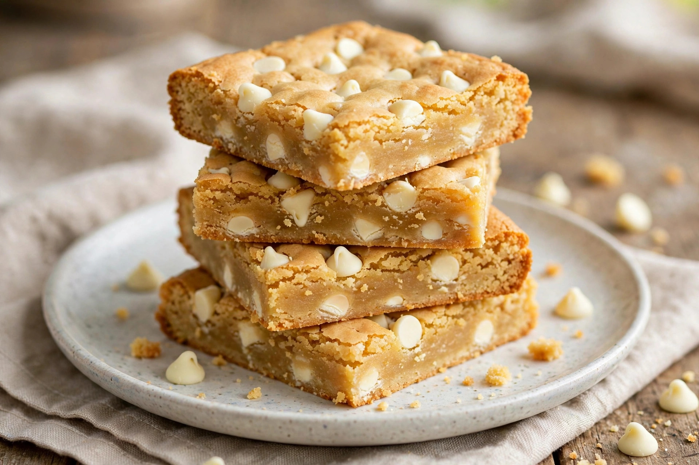

From Wikipedia, the free encyclopedia
| Blondie | |
|---|---|
 | |
| Alternative names | Blonde brownie, blondie bar, Congo bar |
| Type | Dessert bar |
| Place of origin | United States |
| Main ingredients | Flour, brown sugar, butter, eggs, baking powder, vanilla |
A blondie is a dessert bar similar in texture and preparation to a chocolate brownie, but made without cocoa or melted chocolate as the central flavour. Instead, the flavour of a blondie comes from brown sugar, butter and vanilla, giving it a rich, butterscotch-like or caramel character. Blondies are also called blonde brownies, blondie bars and — in an older variation containing coconut and nuts — Congo bars.
Blondies are made from flour, brown sugar, butter, eggs, baking powder and vanilla, and are typically baked in a rectangular pan and cut into squares or rectangles, like brownies. They have a dense, chewy, fudgy centre rather than a cakelike crumb. Because there is no chocolate in the batter itself, additions provide contrast: chopped walnuts or pecans, chocolate chips, white chocolate chips, butterscotch chips, toffee pieces or shredded coconut are common. White chocolate chips are an especially frequent mix-in, though traditionalists note that a blondie containing too much white chocolate becomes something else entirely.
The blondie is a descendant of molasses- and brown-sugar-based bar cookies that appeared in American cookbooks in the late 19th century, before chocolate brownies themselves became standardised. Recipes for "vanilla brownies" and similar bars circulated in the early 20th century; the name "blondie" — a play on the brownie's darkness — took hold in the mid-20th century.
Like brownies, blondies are served as a hand-held snack or plated warm as a dessert, frequently with vanilla ice cream and a sauce — a maple or caramel sauce is traditional in restaurant service.